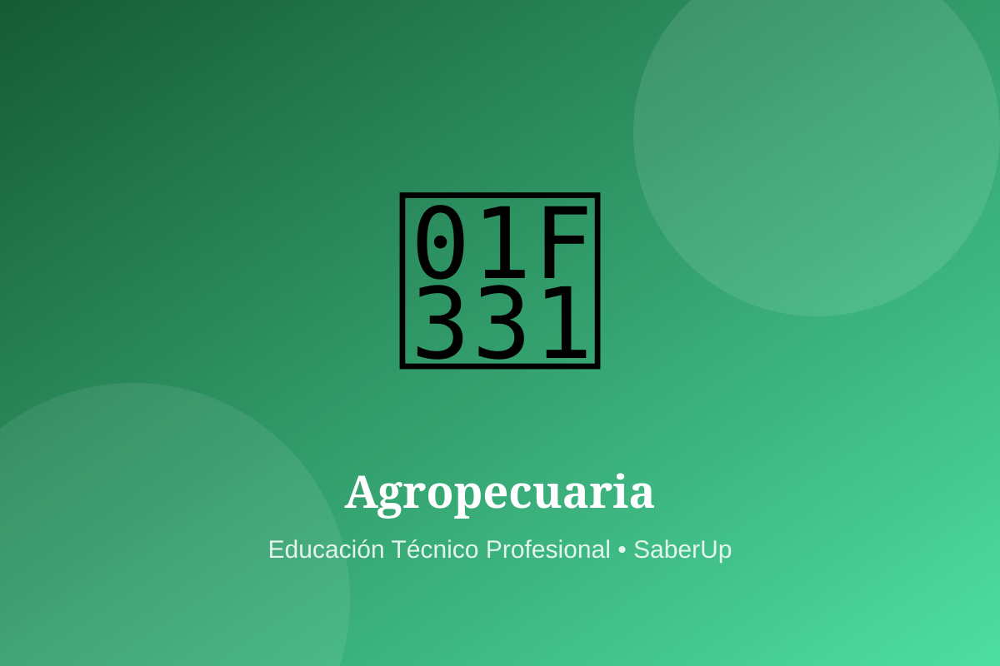

Cargando artículo…
Guía Didáctica
schedule
5 min de lectura
Compost y manejo del suelo en la finca escolar
Una travesía pedagógica para comprender el viaje inagotable del recurso más preciado de nuestra isla y el planeta.
Lic. Wilcelis Mateo
Especialista en Didáctica · 14 de Octubre, 2024
graphic_eq
Audio-resumen narrado (Voz pedagógica clara)
01:45 / 04:20

Figura 1 · Portada del área
psychology
Preguntas para reflexionar en clase o familia
- 1. ¿Cómo aplicarías lo aprendido en tu taller, laboratorio o práctica profesional?
- 2. ¿Qué errores o riesgos comunes identificas en este procedimiento y cómo los evitarías?
- 3. Identifica tres situaciones de tu futuro trabajo técnico en las que este conocimiento sea útil.
Práctica guiada
Duración: 1 a 2 sesiones
Aplica lo aprendido en tu taller
Una actividad práctica para aplicar el contenido del artículo en el taller, el laboratorio o la finca escolar.
Paso A · Preparar
Reúne los materiales y el equipo de protección que indica el artículo.
Paso B · Practicar
Realiza el procedimiento paso a paso, siguiendo la guía o la lista de cotejo del recurso.
Paso C · Registrar
Anota resultados, dificultades y mejoras, y compártelos con tu docente.
picture_as_pdf
Recurso descargable del área
Guía, rúbrica o lista de cotejo imprimible · PDF
Referencias y Fuentes Formativas (APA 7ma Ed.)
- • Ministerio de Educación de la República Dominicana (MINERD). Diseño curricular de la Educación Técnico Profesional (versión vigente). Santo Domingo.
- • Instituciones competentes de cada área (por ejemplo, DGII y OMS). Consulta siempre las normas y guías vigentes. París.
- • Mateo, W. Material didáctico elaborado para SaberUp.
Lecturas pedagógicas complementarias
Comunidad y Preguntas Docentes 2
verified_user
Entorno escolar seguro: Todos los comentarios y aportes pasan por moderación docente antes de ser visibles para estudiantes.
MG
Prof. Manuel Grullón
Ayer · Centro Politécnico
Excelente desglose. Hicimos hoy la práctica de compostaje con mis 28 estudiantes de 4to Técnico y fue fantástica para entender el proceso completo.
reply
Lic. Wilcelis Mateo (Autora)
Docente
¡Qué alegría, profesor Manuel! La práctica en el taller y en la finca es el corazón de la educación técnica. ¡Un abrazo a su grupo!
EP
Estefanía Peña (Madre)
Hace 2 días
Leí este recurso junto a mi hijo para su proyecto del módulo formativo. Las preguntas finales nos sirvieron para repasar el tema en casa. ¡Muchas gracias por el material abierto!